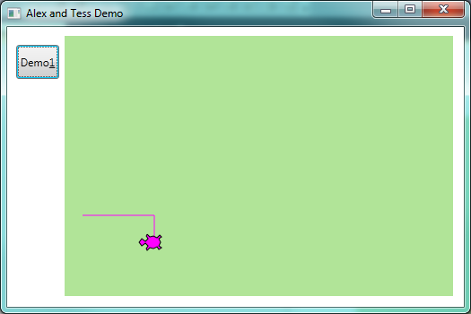
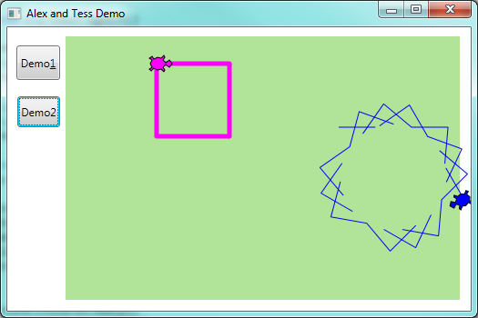
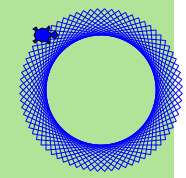
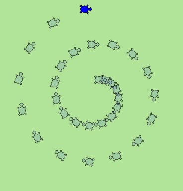
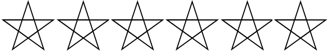
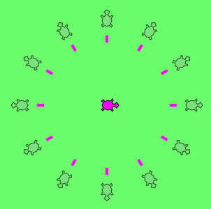

7. Hello, Little Turtles!¶
There are many modules written for C# that provide very powerful features that we can use in our own programs. Some of these are can send email, or fetch web pages. Some come with C#, others are add-ons or modules that we write ourselves, or perhaps download from the Internet.
We’ve written our own module called ThinkLib to go with this book. One of the things it does is it allows us to create turtles and we can get them to draw shapes and patterns.
See the appendix Getting Started with ThinkLib for details (and a video) about how to set it up for your C#.
The turtles are fun, but the real purpose of the chapter is to teach ourselves a little more C#, and to develop our theme of computational thinking, or thinking like a computer scientist. Most of the C# covered here will be explored in more depth later.
7.1. Our first turtle program¶
Our turtles will live and play in a playground.
We’ll create a WPF application. In WPF, the playground will be a Canvas control. So we’ll drag a Canvas onto our application. I like to name my canvas “playground”. I also like to set the Width and Height properties to Auto, and to set the HorizontalAlignment and VerticalAlignment properties to Stretch. This means the playground will also resize when you change the size of the application’s main window.
We can also set some canvas properties to give it a nice background colour, (or perhaps even a background image). So let’s assume we have our application with a canvas and a button. Here is our first turtle example which draws a square:
1 2 3 4 5 6 7 8 9 10 11 12 13 14 15 16 17 18 19 20 21 22 23 24 25 26 27 28 29 30 31 32 | using System.Windows.Documents;
using System.Windows.Input;
using System.Windows.Media;
using System.Windows.Media.Imaging;
using System.Windows.Navigation;
using System.Windows.Shapes;
using ThinkLib;
namespace Part1
{
/// <summary>
/// Interaction logic for MainWindow.xaml
/// </summary>
public partial class MainWindow : Window
{
Turtle tess; // Define a variable to refer to our turtle
public MainWindow()
{
InitializeComponent();
tess = new Turtle(playground); // Give birth to a turtle in the playground.
} // Let variable tess refer to the new turtle.
private void btnDemo1_Click(object sender, RoutedEventArgs e)
{
tess.Forward(80.0);
tess.Right(90.0);
tess.Forward(30.0);
tess.Right(90.0);
}
}
}
|
When we run this program, after clicking the button, our window looks like this:

There are a number of new things in this code:
Line 7 is new: it tells the compiler to use our library ThinkLib. Line 16 defines a variable for referencing a turtle.
When the MainWindow is first instantiated (created), it has a special constructor method at lines 18-22 which is automatically executed. (C# knows this method is the constructor because it has the same name as the class name on line 14.) The skeleton of the constructor is usually written for us by Visual Studio, and it is responsible for any “factory settings” that we want our new window to have.
We added line 21 as part of our factory settings. (When we add our own statements into the constructor, they should always come after the one that Visual Studio already put there — i.e. after the one at line 20).
Line 21 creates our first turtle in the playground. The turtle always starts
its life at a fixed home position. If you don’t like where your turtle is “born” [1] into
the playground, you can provide some extra arguments when you create the
turtle to say exactly where it must be placed). It always starts off facing East (to the right of the screen). The newly created turtle is assigned to the variable tess defined in line 16.
| [1] | Turtles come out of eggs. So it might be more fun (and more accurate) to say “they’re hatched into the playground”. |
Notice that tess is defined as a class-level variable. What that means
is that the turtle will stay alive as long as our GUI window stays alive.
When the user clicks the button, the click event occurs, and the handler code at lines 25-28 is executed. It instructs the object referred to by tess to move, and to turn. We do this by invoking, or calling, methods — these are the instructions that all turtles know how to respond to. The four statements are executed in lines 26,27,28,29, and the picture above shows what you’ll see after the button has been clicked.
As it stands now, the handler code only draws only half a rectangle. Another click of the button will complete the rectangle. (Or better yet, we could modify the code so that it draws a complete rectangle on a single click — we’ll need a total of 8 statements in the handler.)
The coordinate system for the playground is the same as it is for all the controls we’ve seen so far: A position is referred to as (x,y). (0,0) is at the top left corner of the canvas, and increasing x moves to the right, increasing y moves down. (The y axis is opposite to what most school geometry teaches.)
An object can have various methods — things it can do — and it can also have properties (like we’ve already seen with the window and the controls). For example, each turtle draws with a brush. The brush can be a solid colour or it can be textured. We can set the width of the brush, and we can pick it up or put it down. (If a turtle moves while its brush is up, it doesn’t draw a line in the playground.)
The brush associated with the turtle, the width of its brush, the position of the turtle within the playground, which way it is facing, and so on are all part of its current state.
7.2. Instances — a herd of turtles¶
Just as we can have many different buttons or menu items in a program, we can have many playgrounds and many turtles. Each of them is called an instance.
Each instance has its own properties and methods — so Alex might paint with a thin black brush and be at some position, while Tess might be going in her own direction with a fatter brush. So let’s add a few lines to our constructor method to create a second turtle in the same playground, and we’ll set some properties for each of them:
1 2 3 4 5 6 7 8 9 10 11 12 13 14 15 16 17 18 19 20 21 22 23 24 25 26 27 28 29 30 31 32 33 34 35 36 37 38 39 | public partial class MainWindow : Window
{
Turtle tess, alex;
public MainWindow()
{
InitializeComponent();
tess = new Turtle(playground, 100.0, 30.0); // Create a turtle in the playground.
tess.BrushWidth = 5.1; // Set some properties.
alex = new Turtle(playground, 300.0, 100.0); // Create another turtle
alex.LineBrush = Brushes.Blue; // Make its lines blue
alex.BodyBrush = Brushes.Blue; // and make its body blue too
alex.BrushWidth = 1;
}
private void btnDemo1_Click(object sender, RoutedEventArgs e)
{
tess.Forward(80.0); // Make Tess draw a square
tess.Right(90.0);
tess.Forward(80.0);
tess.Right(90.0);
tess.Forward(80.0);
tess.Right(90.0);
tess.Forward(80.0);
tess.Right(90.0);
}
private void btnDemo2_Click(object sender, RoutedEventArgs e)
{
// Draw a broken line by picking up the brush in the middle
alex.Forward(40.0);
alex.BrushDown = false;
alex.Forward(40.0);
alex.BrushDown = true;
alex.Forward(40.0);
alex.Right(95);
}
}
|
Here is what we get after clicking the buttons a few times:

Find a video demonstration of building this application at
http://www.ict.ru.ac.za/resources/thinksharply/videos/TessAndAlex.avi
Here are some Think Sharply observations:
- There are 360 degrees in a full circle. If we add up all the turns that a turtle makes, no matter what steps occurred between the turns, we can easily figure out if they add up to some multiple of 360. This should convince us that Tess is facing in exactly the same direction as she was when she was first created. (Geometry conventions have 0 degrees facing East, and that is the case here too!)
- We could have left out the last turn for Tess, but that would not have been as satisfying. If we’re asked to draw a closed shape like a square or a rectangle, it is a good idea to complete all the turns and to leave the turtle back where it started, facing the same direction as it started in. This makes reasoning about the program and composing chunks of code into bigger programs easier for us humans!
- Alex turns 95 degrees on each click of the button. How many clicks are required before he is back facing East, and we have a pleasant complete pattern on the screen? How many corner points will the complete pattern have?
- Comments (at lines 8,9,11,18,30) help record our mental chunking, and big ideas. These ideas are not always clear when all we have is the bare code.
- Notice that Alex drew some lines and is partially off the playground. If we don’t like that, we can set the ClipToBounds property of our canvas. Turtles will still be able to go outside the playground, but their lines and the turtle itself won’t be rendered. (Render is our fancy computer-speak for drawing something.)
- And, uh-huh, two turtles may not be enough for a herd. But the important idea we want to emphasize is that the ThinkLib module gives us a kind of factory that lets us create as many turtles as we need. Each instance has its own state and behaviour.
7.3. The while loop¶
It should have taken you 72 clicks to complete Alex’s pattern. That is a tedious amount of clicking.
A basic building block of all programs is to be able to repeat some code, over and over again — in programming we call this looping.
C#’s while loop solves this for us. Let’s say we want to repeat some code 72 times.
In this loop, the variable
iis used to control what happens. We call it the loop control variable. We could have chosen any other variable name instead.Between the curly braces is the loop body. This is the section of code that will be repeatedly executed.
Before each iteration or pass of the loop, a check is done to see whether the controlling expression
(i < 72)is true or false. If it is true, the loop body is executed again. At the end of the loop body the assignmenti = i + 1is executed. This adds one onto the variablei.So the full sequence of actions here is
- Define a new variable i and give it an initial value of 0.
- Test the loop controlling expression.
- If it true, execute all the statements in the body of the loop. If it is false leave the loop.
- Repeat everything from the second step in this sequence.
Once the controlling expression is tested and found to be false, program execution continues at the next statement after the loop body (line 6).
Let’s modify our handler for Demo2: on a button click we’ll do the same thing 72 times:
A single click on the button now produces this pattern:

Some observations:
- What is important here is that we’ve found a “repeating pattern” of statements, and used a loop to repeat the pattern. Finding the chunks and getting our programs arranged to repeat useful chunks is a vital skill in computational thinking.
- Computer scientists like to count from 0! Observe carefully that the body of the loop
executes exactly 72 times: the first time
ihas the value 0, then 1, then 2, and the last iteration of the loop occurs whenihas the value 71! When the program is about to execute line 10, the value ofiwill be 72. - Notice that after 72 turns of 95 degrees each, you end up with an exact multiple of 360, so Alex is facing the same way as he started — East.
7.4. A few more turtle methods and tricks¶
Turtle methods can use negative angles or distances. So tess.Forward(-100.0)
will move Tess backwards, and tess.Left(-30.0) turns her to the right. Additionally,
because there are 360 degrees in a circle, turning 30 to the left will get Tess facing
in the same heading as turning 330 to the right!
This suggests that we don’t need both a left and a right turn method — we could be minimalists, and just have one turn method.
One aspect of thinking like a scientist is to understand more of the structure and rich relationships in whatever field we are working in. So revising a few basic facts about geometry and number lines, and spotting the relationships between left, right, backward, forward, negative and positive distances or angles values is a good start if we’re going to play with turtles.
Every turtle has a Boolean property Visible. If you set this false, the turtle
becomes invisible. It’s brush can still draw in the playground, though.
Turtle methods are executed as fast as possible. There is a property that can force the turtle to delay between each operation. This appears to slow the turtle down, and might be more fun if you prefer watching the pattern build up rather than just want to see the finished product.
A turtle can also “stamp” its footprint onto the playground (it can also stamp some other things, like text, into the playground). This will remain after the turtle has moved somewhere else. Stamping works, even when the brush is up or the turtle is invisible.
Methods like Forward and Left use relative geometry: they move forward from the current position, or turn relative to
the current heading. But there are also some “absolute” methods.
alex.Goto(x,y)will go to absolute position (x,y). If the brush is down, the turtle will leave a trail.alex.WarpTo(x,y)moves the turtle to position (x,y) without drawing. The brush remains in the state it was in.alex.Headingis a property that gets or sets the turtle’s heading.alex.Positionis a property that gets or sets the turtle’s position. Setting this is like callingWarpTo.
Let’s put a new button on our GUI and get Alex to show off some of these new features:
Here’s what this gives:

How many times was the body of the loop executed? How many turtle images do we see on the playground? All except one of the shapes are footprints (and footprints look a bit different from the turtle itself). But the program still only has one turtle instance.
Read the Code to Extract Meaning
Beginners sometimes make the mistake of “skip-reading” or glossing over fragments of code. If you can’t explain why the turtle drew that spiral, you need to go back and study every line of code. Did the angle of turn keep on changing as the loop ran? Why would changing the step size that the turtle takes give us a spiral?
Reading code requires that you make sense of it in your mind, and can imagine how the statements work together to achieve the outcome. Practice “deep-reading” all code: what would happen if this statement was left out, or changed? If you’re not sure, you can always just type the code in and check whether you have grasped the ideas well.
7.5. Readings¶
C# loops come in four different flavours. We’ve only seen the while loop here:
you’ll meet for, foreach and do while shortly.
Learn more about C# loops:
7.6. Glossary¶
- constructor
- A special method that has the same name as the class that contains it. If it exists, it is automatically executed when we create any new instance of the class.
- controlling expression
- A test to control if the loop should be executed again or not.
- instance
- An object of a certain type, or class. Tess and Alex are different instances of
the class
Turtle. - loop body
- Any number of statements nested inside the curly braces of a loop.
- method
A method is a code block containing a series of statements.
Methods are defined within a class.
Invoking or activating the method causes the object to respond in some way, e.g.
Forwardis the method when we saytess.Forward(100.0).- invoke
- An object has methods. We use the verb invoke to mean activate the
method. Invoking a method is done by putting parentheses after the method
name, with some possible arguments. So
tess.Forward(20.0)is an invocation of theForwardmethod. - loop
- A construct in the programming language that lets us repeatedly execute statements.
- object
- A “thing” to which a variable can refer. This could be a canvas, a button, or one of the turtles we have created.
- property
- Some state or value that belongs to an object. For example, Tess has a brush that she uses for painting her trail.
whileloop- A statement in C# for convenient repetition of statements in the body of the loop.
7.7. Exercises¶
Give three properties of your cellphone object. Give three methods of your cellphone.
In the last spiral drawing it looks like Alex ended up facing the same direction as he started in. Prove that this is indeed the case.
Suppose our turtle Tess is at heading 0 — facing East. We execute the statement
tess.Left(3645);What does Tess do, and what is her final heading?Provide four buttons on you GUI to allow the user to get Tess to draw any any of these regular polygons (regular means all sides the same length, all angles the same.)
- An equilateral triangle
- A square
- A hexagon (six sides)
- An octagon (eight sides)
If you were going to draw a regular polygon with 18 sides, what angle would you need to turn the turtle at each corner?
Add buttons to your GUI to allow allow the user to clear the drawings of all turtles.
Add a slider control to your GUI that enables the user to set Tess’ brush width to any value between 1 and 20.
Add a sub-menu with items that will allow the user to choose one of three brushes for Tess.
Use a loop to make a turtle draw a shape like this:

Hints:
- Try this on a piece of paper, moving and turning your cellphone as if it was a turtle. Watch how many complete rotations your cellphone makes before you complete the star. Since each full rotation is 360 degrees, you can figure out the total number of degrees that your phone was rotated through. If you divide that by 5, because there are five points to the star, you’ll know how many degrees to turn the turtle at each point.
In this chapter we introduced the
whileloop, which repeated statements in the loop body. Do you think one of the statements in the loop body could be another loop? Or, asked another way, can we nest our loops? Experiment by adapting the code from the previous exercise to draw this:Make a turtle draw a face of a clock that looks something like this:
Do you think it should be possible to have more than one playground in a program? Write an application that puts Alex and Tess each in their own playgrounds.
What is the collective noun for turtles? (Hint: they don’t come in herds, like this chapter suggested.)